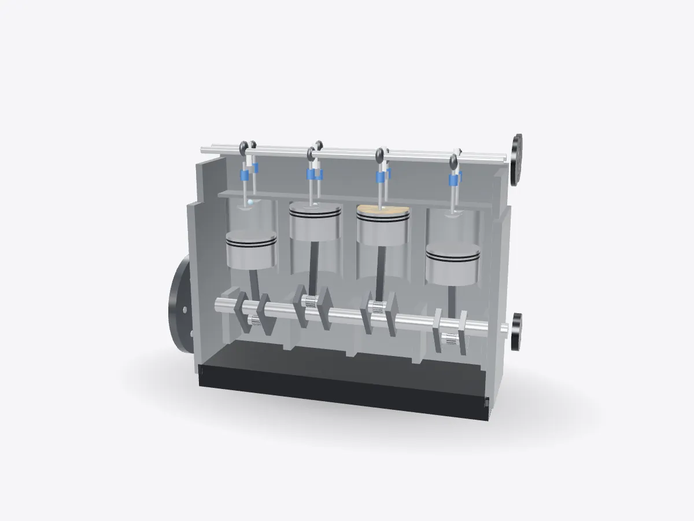

01 / 05
Overview
7 parts, one idea.
See how a four-cylinder car engine works in 3D. Watch pistons, crankshaft, camshaft, valves and spark plugs fire in order, slice it open and rebuild it.
Drag to orbit, pinch or scroll to zoom, tap any part.
How it works · Machines
Four cylinders, thousands of controlled explosions a minute, all turned into smooth rotation. Spin it, slice it and watch each cylinder fire.

Scores are saved on this device only.
01 / 05
Overview
See how a four-cylinder car engine works in 3D. Watch pistons, crankshaft, camshaft, valves and spark plugs fire in order, slice it open and rebuild it.
Drag to orbit, pinch or scroll to zoom, tap any part.
02 / 05
Explode
Keep scrolling and every part slides away from the centre, so you can see how they fit together.
03 / 05
Slice
A section plane sweeps through the model as you scroll. Pick an axis and set the depth yourself.
04 / 05
Parts
Pick a part or tap a glowing dot. It lights up and everything else fades back.
05 / 05
Facts
Intake, compression, power and exhaust take two full turns of the crankshaft.
Nicolaus Otto built the first practical four-stroke engine, which is why it's called the Otto cycle.
The camshaft turns once for every two turns of the crankshaft.
Explained
A petrol car engine is a machine for turning chemical energy into rotation. It does this in a repeating four-step pattern called the four-stroke cycle, first made practical by Nicolaus Otto in 1876. Each cylinder runs the cycle on its own, and the cylinders are timed so that their power strokes are spread evenly around the crankshaft's rotation.
On the intake stroke the piston moves down and the intake valve opens, so the falling pressure draws in air mixed with a fine mist of fuel. On the compression stroke both valves are closed and the piston rises, squeezing the mixture into a small space at the top of the cylinder. Just before the piston reaches the top, the spark plug fires. The burning mixture expands rapidly and drives the piston down on the power stroke, which is the only stroke that produces work. Finally, on the exhaust stroke, the exhaust valve opens and the rising piston pushes the burnt gas out towards the exhaust pipe.
Each piston is joined to the crankshaft by a connecting rod. The crankshaft has offset journals called crank pins, so as the pistons go up and down the shaft turns, much like your legs turning the cranks of a bicycle. In an inline-four engine, pistons one and four move together, and so do two and three, which keeps the engine well balanced. Because the cycle takes two revolutions and there are four cylinders, one cylinder fires every half-turn. A heavy flywheel stores energy between those pulses so the output feels smooth.
The valves are opened by camshafts, which are driven from the crankshaft by a toothed belt or a chain. Each valve needs to open only once per cycle, so the camshafts turn at exactly half the crankshaft's speed. Springs close the valves again, and the shape of each cam lobe decides how far and for how long a valve opens.
The order in which the cylinders fire is chosen to share out the forces along the crankshaft. The model above uses 1-3-4-2, the usual order for inline-four engines. Slow it down in Run mode and you'll see the flash move between cylinders while the valves above each one open and close in step. Real engines idle at several hundred revolutions per minute, so this all happens far too quickly to see without slowing it down.
D3DDD
D3DDD makes them: product cutaways, exploded views, architectural renders and technical drawings.